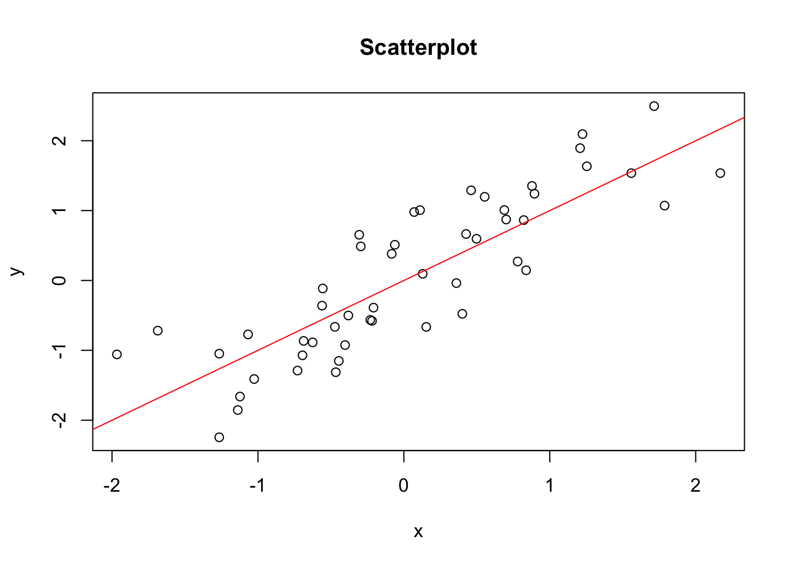

| height | weight | age |
|---|---|---|
| 178.4 | 69.2 | 46 |
| 164.6 | 84.7 | 40 |
| 170.0 | 69.7 | 49 |
| 162.8 | 76.5 | 29 |
| 172.8 | 66.7 | 44 |
Add-ons of .Rmd-files
This will describe how to include additional things, e.g: tables, pictures, graphs, csv-files, etc.
Inline R Code
Inline code can be used to display R objects, which change dynamically, in static text. Instead of manually writing each instance of a resulting number in the text, inline code allows automatic pasting of the number and changes automatically when the corresponding result changes. For example, when providing a result that is calculated using randomly drawn numbers, the displayed number adjusts accordingly based on which numbers are drawn.
Inline R code is always fenced by backticks (`) and before the object or function there is always an “r” to mark the language that should be used. When put together inline R code looks like this for example:
The mean of the data is `r mean_data`.
When the markdown is rendered, this pastes the R variable mean_data at the end of the sentence. When mean_data is 5.29, it looks like this:
The mean of the data is 5.29.
Important
All objects called in inline code need to be defined in a code chunk beforehand. In order for the above example to work in an .Rmd file, there needs to be the following chunk before any inline code containing mean_data.
```{r}
#mean is calulcated and rounded to two digits
mean_data <- mean(c(3, 4, 5, 5, 6, 7, 7)) |> round(digits = 2)
```Dynamic Context (“stories”)
It is possible to change the context of the exercise dynamically. For example, when creating exercises, each student will receive 20 randomly sampled data points, however for group A, this sampled data is put into the context of food production, for example the height of apple trees, while for group B this represents the height of a group of people.
Putting these numbers into different contexts is possible through sampling through “stories”. (Note, this is not an offical term from R/exams, instead it was coined by the Statistics Institute at BOKU.) These stories are stored in an extra .R-file as a list object, which is then sourced into the .Rmd-file, where the different elements are used.
Different types of elements of a story can include:
- An introductory text, which provides the context
- Parameters for the data generation
- text building blocks to be able to adjust parts of the questions dynamically
- units
- etc.
Tables
Manual Creation
The | do not need to be vertically aligned, it just makes it more readable when creating the table.
Inline code can also be included in the table.
| Header 1 | Header 2 | Header 3 |
|----------|----------|----------|
| x1 | y1 | z1 |
| x2 | y2 | z2 |
| x3 | y3 | z3 |When rendered, the table looks like this:
| Header 1 | Header 2 | Header 3 |
|---|---|---|
| x1 | y1 | z1 |
| x2 | y2 | z2 |
| x3 | y3 | z3 |
Columns can also have different alignments marked by :.
| right | left | default | center |
|------:|:-----|---------|:------:|
|x1 |y1 |z1 |a1 |When rendered it appears like this:
| right | left | default | center |
|---|---|---|---|
| x1 | y1 | z1 | a1 |
Automatic Creation of tables
Using the function kable()from the knitrpackage, objects like dataframes or matrices can be converted automatically to a table for display. For example, this code chunk converts the data frame data into a markdown table automatically including the column names as headers in this case.
```{r}
knitr::kable(data)
```The table then looks like this:
There are many more (styling) options for markdown tables, see here the help page for kable, ?kable, and here for more ????
Pictures
Pictures can be included as well, by using the following syntax:

Important
It is necessary to include the following line in a code chunk somewhere above the picture in the .Rmd. Without this, the picture will not be found during the conversion with R/exams.
include_supplement(file = "file_name.jpg", dir = "path/to/folder")Using the link to the BOKU logo, this then looks like this (for a specified width):

Additonal parameters, like (relative) height, width, etc. can be specified as well as follows:
{width="40%"}See here for more info ??????
Embedding files for download
It is possible to embed files of any format in the exercises, so that users can download them by clicking on a link. The file will be embedded locally using Base64 encoding. This way, it is possible to provide data, PDF files, or images.
For statically embedding files, simply add a markdown link to the local copy of the file:
[alt text](path_or_link/to/file)For instance, embedding the quarto documentation PDF then looks like this:
Note
Files added to exercises this way will be embedded for each exercise individually in the generated XML file and have slightly larger file sizes than the original files. In case of adding large files like images, the size of the XML files can become very large which can cause problems and slow down the import into Moodle.
Dynamically embedded files
You might want to add e.g. a data file which is generated individually for each exercise. This can easily be done by first saving the file locally using R code in the Rmarkdown and then inserting a link to it like above.
To make an individually generated CSV data file available for download, you can use the following code. The arguments row.names and col.names control whether to show the respective labels. The file argument determines the file name under which it will be saved to disc. With the sep argument, the separator for the files can be set, e.g. use "," for comma-separated values or "\t" for tab-separated values.
Important
Place this following code in an R code chunk!
# Generate some random data
data_frame = data.frame(x = rnorm(10), y = rnorm(10))
# Save data as a CSV file
write.table(data_frame,
file = "data.csv",
row.names = FALSE,
col.names = FALSE,
sep = ",")To add a download link, use the following code in a markdown section:
Download the data here: [link to data](data.csv)Graphs
It is also possible to include a graph that has just been created using R code. Below is a markdown code chunk, which randomly samples data and creates a simple scatterplot with a y = x line.
```{r}
set.seed(123)
x <- rnorm(n = 50)
y <- x + runif(50, min = -1, max = 1)
plot(x, y, main = "Scatterplot")
abline(a = 0, b = 1, col = "red")
```knitr tags, like fig.width, included in the first line inside the curly brackets {r} can be used for changing the appearance of the code, plots etc. See here for more information on knitr options.
The code above produces the following plot.

Links
Links to webpages can be included with the following syntax:
[alt text](link/to/page)Taking the example of the CRAN page of the exams package, it looks like this in markdown and implemented:
Find the exams package [here](https://cran.r-project.org/package=exams). Find the exams package here.
Markdown options
For markdown, there are many styling options for text etc.
A few examples:
# Heading 1
## Heading 2
### Heading 3
...
*italic text*
**bold text** When rendered, it looks like this:
Heading 1
Heading 2
Heading 3
…
italic text
bold text
More markdown options can be found here ?????